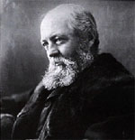

|

|

|
|
|
Landscape architect and author Frederick Law Olmsted was
born April 26, 1822 in Hartford, Connecticut. Olmsted rose
to prominence with his designs for New York's Central Park,
Boston's Emerald Necklace, and the 1893 World's Columbian
Exposition. In addition to his landscape work, Olmsted was a
journalist and an administrator.
After leaving home and school at the age of 18, Olmsted
embarked on a varied career path. During the 1850s, at the
urging of New York Daily Times editor Henry J. Raymond,
Olmsted traveled the southern United States gathering
information and writing essays on slavery and the South.
These essays were later published in a series of volumes:
A Journey in the Seaboard Slave States (1856), A
Journey through Texas (1857), and A Journey in the
Back Country (1860). The essays were highly critical of
the slave south and Olmstead made unflattering comparisons
with the free labor system in the North. Olmsted went on to
pursue journalism as a career until 1857 when he was
appointed as Superintendent of New York's Central Park,
still in the planning process. While working as
Superintendent, Olmsted and architect Calvert Vaux submitted
a design for Central Park. Their plan, called "Greensward,"
was selected as the Park's ultimate plan.
Desiring to contribute to the Union war effort, Olmsted
took a leave of absence in 1861 to serve as Executive
Secretary of the United States Sanitary Commission (USSC).
The Commission acted as a citizen advisory and investigative
board that supplemented the Army Medical Bureau. Eventually,
the commission became a political power advocating
healthcare reforms. As part of its services the Commission
aided soldiers in various capacities, including providing
medical supplies, inspecting and supplying military
hospitals, and recruiting nurses. Olmsted served for two
years with the USSC and then moved to California.
In 1865 Olmsted returned to New York and his work with
Vaux. As the champion of the "City Beautiful Movement"
Olmsted aimed to create city parks as oases of calm and
harmony for people of all classes. Olmsted, both in
partnership with Vaux and on his own designed city parks in
Buffalo, New York, Chicago, and Boston. The 1893 World's
Fair in Chicago showed off new industrial forms and included
a "dream city" based on his architectural plans. In addition
to city parks, Olmsted designed community developments, such
as Riverside, Illinois (a Chicago suburb), some individual
homes, and parts of Stanford University and the University
of California, Berkeley.
Olmsted's own architectural landscaping philosophies and
design ideas left marks not only in the cities in which he
built parks, but also in those where his followers worked.
For example, an Olmsted disciple built San Francisco's
Golden Gate Park. Olmstead changed the way Americans viewed
architecture and the urban world. He died on August 28, 1903.
Source: Joan Waugh, ed., Facts on File Encyclopedia of American
History: Civil War and Reconstruction, 1856 to 1869 (New York: Facts on
File, 2003), 257-258.
|